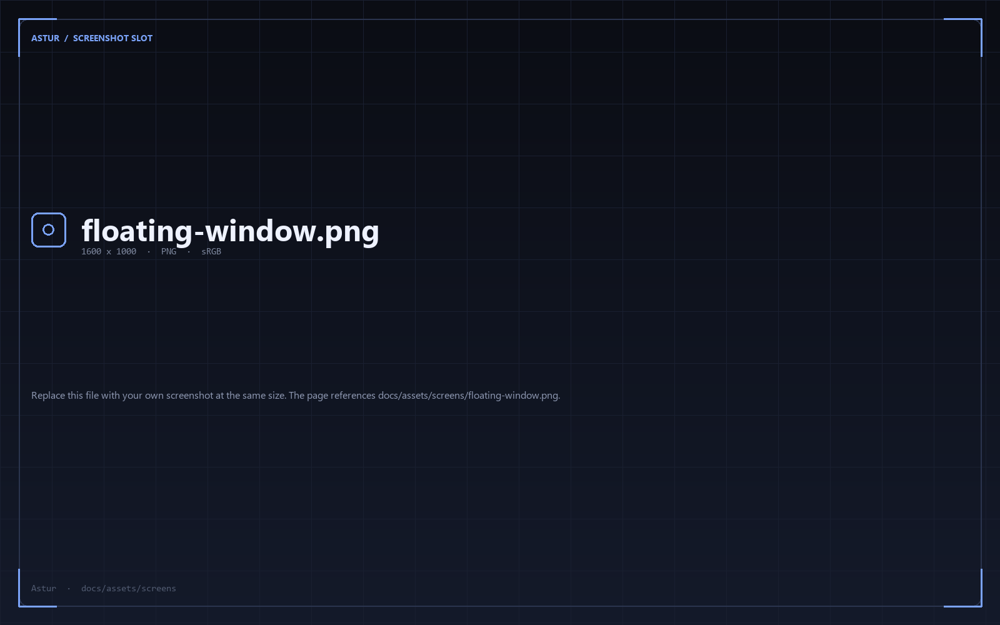
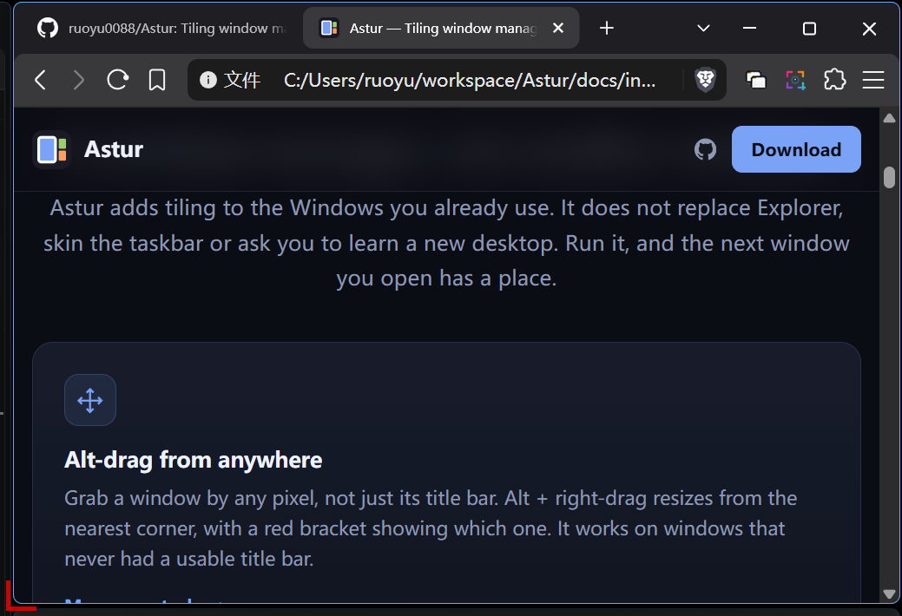
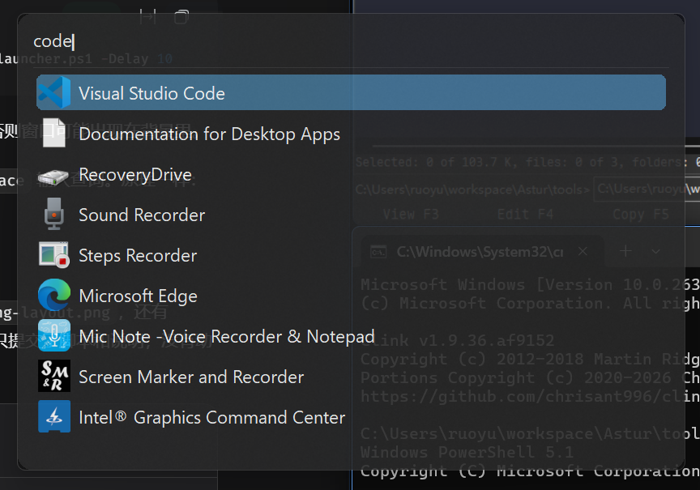
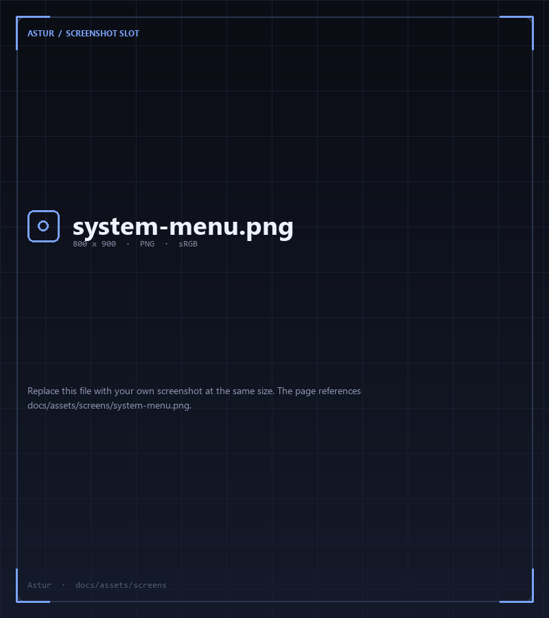
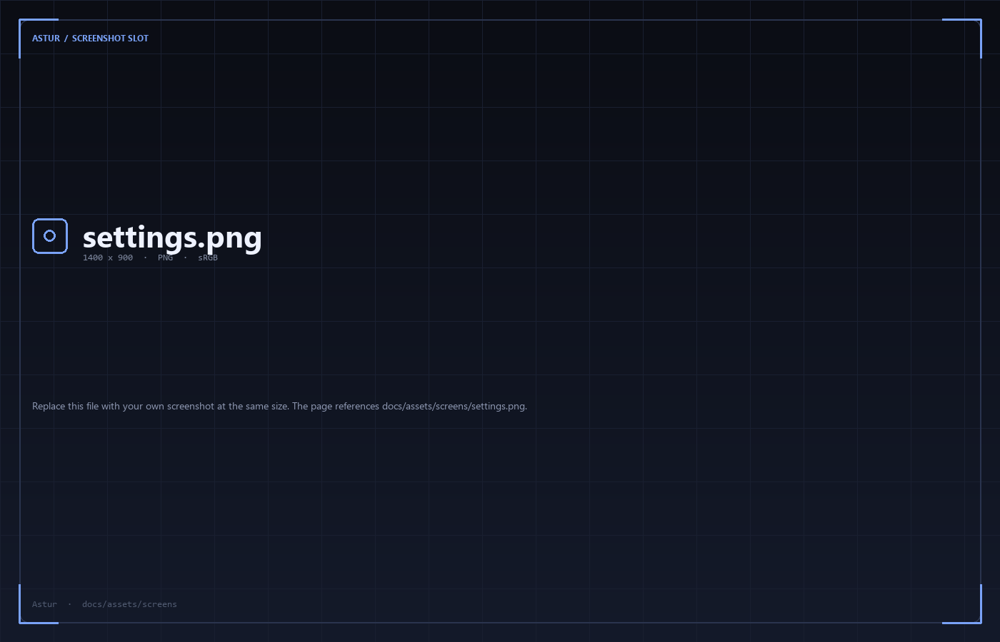

Getting started
Astur is one portable executable. There is no installer, no service and no driver: unzip it, run it, and it starts managing windows with sensible defaults.
What you need
| Windows | Windows 10 (64-bit, 22H2 or later) or Windows 11 |
|---|---|
| Disk | About 1 MB for the executable, plus your configuration files |
| Privileges | None. Astur runs as a normal user; admin windows are simply left alone |
| Runtimes | None. The executable is self-contained |
Install in four steps
- Download the latest zip from the releases page.
- Unzip it wherever you keep portable tools, for example
C:\Tools\Astur\. Keepastur.exeand the settings editor together. - Run
astur.exe. A tray icon appears and the tiling behaviour starts. There is no console window. - Open Settings from the tray when you want to change something. Configuration is optional; the defaults are usable as they are.
Where things live
On first launch Astur creates two commented files in %USERPROFILE%\.astur\:
| File | What it controls |
|---|---|
astur.conf | Layouts, workspaces, gaps, borders, focus, motion, hotkeys, window rules, launcher, system menu, desktop extras. |
navbar.conf | The status bar: shape, palette, font, widget zones, per-widget click actions, monitors, auto-hide. |
Both files reload about 0.1 seconds after you save them. A malformed file is reported, not applied; Astur keeps the settings it already has and never overwrites a file it cannot read.
Starting with Windows
Put a shortcut to astur.exe in shell:startup (press Win+R, type shell:startup and press Enter). Astur has no service and does not register itself anywhere else. To update, quit it from the tray, replace the executable and run the new one; your configuration is untouched.
Quitting
Use Quit in the tray menu. Astur restores every window it moved, showed or hid before it exits. If it is killed instead, the next launch offers the same recovery from its rescue file. There is no “uninstall” step: quit, delete the executable, and remove %USERPROFILE%\.astur\ if you also want the configuration gone.
First five minutes
You do not need the rest of this page to start. These eight things show almost everything Astur does.
| Try this | What should happen |
|---|---|
| Alt + left-drag a window by its content area | The window moves, even though you never touched its title bar. |
| Alt + right-drag near a corner | The window resizes from that corner; a red bracket marks it. |
| Alt + Space | The launcher opens. Type a few letters of an app and press Enter. |
| Alt + M | The system menu opens: lock, sleep, restart, shutdown, settings and Astur actions. |
| Alt + 1, then Alt + 2 | Two separate workspaces. Each keeps its own windows and layout. |
| Alt + T | Tiling turns off; windows stop being placed. Press it again to re-tile. |
| Alt + F | The focused window floats; the tiled windows close the gap behind it. |
| Alt + P, then a workspace number | Swap mode: the two workspaces exchange all their windows. |
| Alt + V | Every minimized window on this workspace comes back and the layout closes up again. |
Everything in that table uses the main key, which is Right Alt by default. Left Alt remains the applications' Alt, so Alt+F4 and menu bars still work. If you choose a different main key, read every “Alt” below as that key.
Tiling
Tiling means Astur chooses where a window goes instead of letting windows pile up on top of each other. The windows remain ordinary Windows windows: they keep their taskbar buttons, their Alt+Tab entries and their own menus.
What happens when a window opens
A new top-level window takes the next free slot in the current layout. The windows already there shrink or move to make room, and focus follows the newcomer. Close a window and the remaining ones expand into the space. Nothing is hidden behind anything else unless you are in monocle or a tabbed column.
Some windows are deliberately left alone: elevated processes (Task Manager, an admin terminal, UAC), windows whose class is in ignore_classes, and Windows shell surfaces such as the taskbar and tooltips. They behave exactly as they would without Astur.
Focus and selection
| Shortcut | Action |
|---|---|
| Alt + arrow keys | Focus the window in that direction. The mouse cursor follows the focus by default. |
| Alt + D / A | Focus the next / previous window in layout order. |
| Alt + Shift + D / A | Swap the focused window with the next / previous one. |
Moving and resizing inside the layout
| Shortcut | Action |
|---|---|
| Alt + Shift + arrows | Move the focused window in that direction; at a monitor edge it crosses to the neighbouring monitor. |
| Alt + Z / C | Shrink / grow the master column in the master layout. On a scrolling monitor these resize the column instead. |
| Alt + S | Promote the focused window to master. |
| Alt + E | Maximize this workspace: every tiled window covers the work area, the focused one on top; again to go back. The layout is untouched. |
Closing, minimising, floating
| Shortcut | Action |
|---|---|
| Alt + W | Close the focused window. |
| Alt + Q | Minimise the focused window. Press it again within a moment to restore everything that key minimised. |
| Alt + V | Bring back every minimized window of this workspace, whichever way it was minimized, and re-tile. Floating windows come back in front of the tiles; the focus stays where it was unless that window was one of the minimized ones. |
| Alt + F | Toggle floating for the focused window. The rest of the layout re-tiles at once. |
| Alt + T | Turn tiling on or off for the current state. Press again to re-tile. |
Borders and dimming
Tiled windows can carry a coloured border, and unfocused windows can be dimmed so the focused one is obvious at a glance. A floating window can take its own border colour, separate from the tiled colour, which makes dialogs and settings windows easy to pick out. Both are appearance settings; they never affect placement.
Layouts
Six layouts share the same windows and the same shortcuts. Switching layout re-tiles the current monitor immediately; it does not reopen or move windows to another workspace.
| Layout | Where windows go | Good for | Useful keys |
|---|---|---|---|
| dwindle default | Each new window splits the largest free rectangle, spiralling toward a corner. | General use. Fills a screen quickly without decisions. | Alt+arrows to navigate the spiral |
| master | One large master column on the left, the remaining windows stacked on the right. The master ratio is 55% by default. | One main document or editor beside reference windows. | Z/C ratio, S promote |
| columns | Equal-width columns, one window per column. | Wide monitors, comparing several documents side by side. | Arrows, Shift+arrows |
| grid | A balanced rows-and-columns grid. | Dashboards, monitors, many similar windows. | Arrows, Shift+arrows |
| monocle | Every tiled window fills the work area; the focused one is on top. | Presentations, reading, one thing at a time. | D/A cycle windows |
| scrolling | Columns on an endless horizontal strip. Columns past the edge are a scroll away. | Many windows in a linear workflow, Niri-style. | See the scrolling reference |
Choosing a layout
There are three levels, and the most specific one wins:
An empty entry or default means “inherit the level below”. So workspace 2 uses grid, workspace 6 uses scrolling, and every other workspace uses its monitor's layout, which in turn falls back to layout.
Switching layout at runtime changes the focused monitor only and lasts until the next configuration reload, which puts the file back in charge. The bar's layout widget always shows each monitor's current layout, including the focused column number on scrolling monitors (scrolling 2/5).
Workspaces
A workspace is a complete set of windows, not a stretched virtual desktop. Each one keeps its layout, its focus and — on a scrolling monitor — its own column strip and scroll position.
How many, and where
Astur supports up to 20 workspaces. Ten are enabled by default and bound to the number row. The count and the keys are ordinary configuration:
You can bind more than ten keys (... 0 G H) or fewer. A workspace without a key is still reachable from its bar pill, from swap mode, or from a custom shortcut.
Shared or per monitor
workspace_mode decides whether the numbered workspaces are global or belong to each screen:
| Mode | Behaviour |
|---|---|
shared default | One numbered set for the whole desktop. Each workspace belongs to one monitor (workspace 1 on the main screen, 2 on the next, and so on); its key switches to it and focuses that monitor. The other screens keep what they were showing. |
per_monitor | Each monitor has its own numbered set. Monitor 1 on workspace 2 and monitor 2 on workspace 5 can be visible at the same time. |
Switching and moving windows
| Shortcut | Action |
|---|---|
| Alt + 1…9, 0 | Switch to workspace 1…10. |
| Alt + Shift + 1…0 | Move the focused window to that workspace; you stay where you are. |
| Alt + , / . / / | Go to the focused monitor's 1st / 2nd / 3rd workspace (in that monitor's own order). |
| Alt + L / ; / ' | Go to the 1st / 2nd / 3rd workspace of the next screen in switch_ws_monitors (the next monitor by default). |
| Alt + Shift + those six keys | Move the focused window to that workspace instead of following it. |
The comma and letter shortcuts are easy to miss because they are not on the number row: they exist so a laptop or a keyboard without a convenient number row can still reach every workspace on every monitor without counting.
Keeping the letter keys on two screens
switch_ws_monitors decides which screens Alt + L / ; / ' may reach. all is the default and keeps the plain next-monitor rule.
- Numbers are screens, left to right, starting at 1 — the same numbering as
monitor_layoutsand the bar'smonitors. - Two or more screens listed: each press goes to the next listed screen, skipping the others, and wraps around. From a screen that is not listed it still takes you into the list.
- Exactly one screen listed: the three keys always go to that screen's 4th / 5th / 6th workspace, from anywhere — they become that screen's 4, 5 and 6.
- Read only when the desktop has three or more screens. With one or two, the keys behave exactly as before.
- Alt + , / . / /, the bar pills, the wheel and the workspace numbers are never restricted.
Swap mode
Alt + P puts the screen into SWAP MODE. The next key chooses the other workspace:
- A digit 1…0 swaps the two workspaces and leaves swap mode.
- A workspace key does the same.
- Alt + A / D (or Left / Right) swaps with the previous / next workspace and stays in swap mode, so you can keep going.
- Any other key leaves the mode without swapping.
Every workspace keeps its own layout, so a swap moves the windows but not the layouts. This is the quickest way to put a full workspace on another screen or another number.
Names, icons and wallpapers
Workspaces can be labelled in the bar. Names are comma-separated and fall back to the number when a position is empty. Icons are optional short labels, symbols or glyphs. Per-workspace wallpapers use the same order, separated by ;;; an empty slot changes nothing.
The bar chooses what a workspace mark shows: numbers, names, icons or both (workspace_label), plus optional app icons for the windows inside (workspace_apps).
Persistence
By default Astur remembers the active workspace and the order in which you used windows (persist_state = true), so a restart puts you back where you were rather than on workspace 1. Quitting still restores every window first.
Scrolling layout
Scrolling is a Niri-style workspace: windows sit in columns on an endless horizontal strip, and the view scrolls along it. Instead of squeezing a fifth window into the same screen, you add a fifth column and scroll to it.

Columns and widths
Each column is a fraction of the screen width. A new window opens as a new column to the right of the focused one at scroll_default_width (0.5, so two fit side by side). Widths are not pixel values, so the same layout works on a laptop and an ultrawide.
| Shortcut | Action |
|---|---|
| Alt + R | Cycle the width presets: 1/3, 1/2, 2/3, full. |
| Alt + Z / C | Narrow / widen the focused column by 0.1. |
| Alt + S | Toggle the focused column between full width and its previous width. |
| Alt + Shift + R | Cycle the height presets for windows inside a column. |
| Alt + Shift + Z / C | Make the focused window shorter / taller inside its column. |
Moving around the strip
| Shortcut | Action |
|---|---|
| Alt + Left / Right | Focus the previous / next column; at the end of the strip, move to the next monitor. |
| Alt + Up / Down | Focus the window above / below inside the column; in a tabbed column, the previous / next tab. |
| Alt + Shift + Left / Right | Move the focused column; at the end, the window moves to the next monitor. |
| Alt + Shift + Up / Down | Move a window up / down in its column; reorder tabs in a tabbed column. |
| Alt + D / A | Focus the next / previous window. |
| Alt + Shift + D / A | Move the column right / left. |
| Alt + Home / End | Focus the first / last column. Add Shift to move the column there. |
Stacking and tabs
Alt + [ pulls the focused window into the column on its left; Alt + ] pushes it into the column on its right. If the window already shares a column, the same key pushes it back out into a column of its own. Windows sharing a column split its height.
Alt + Shift + T turns a column into tabs: one window at a time under a tab bar, with an icon and title per tab. Click a tab to switch; Alt-drag the bar to move the whole column. Press it again to go back to stacked windows.
Peek, park, and other monitors
A column partly past the screen edge peeks: it is left where it is, even when a monitor sits on that side, so it can hang onto the neighbouring display. A column completely outside its own monitor is parked outside the virtual screen. Parked windows keep their taskbar button and Alt+Tab entry; activating one scrolls it into view.
Parking is not a hiding place you can lose windows in. Quitting, relaunching after a crash, turning tiling off, or switching the monitor to another layout brings every parked window back on screen.
Centring
Alt + X centres the focused column once. The permanent behaviour is scroll_center:
| Value | When focus moves to a column |
|---|---|
never default | Scroll only as far as needed to show it completely. |
always | Keep the focused column centred. |
on-overflow | Stay put if it fits; centre it only when it does not. |
Mouse and touchpad
- Alt + wheel focuses columns; wheel down moves right. Add Shift to move the column instead.
- Alt + horizontal wheel or a touchpad swipe focuses left / right, one column per gesture.
- While Alt-dragging a window, drop it on the left or right quarter to create a new column beside the target; drop it in the middle to stack it into that column.
- While Alt-right-dragging, the side edges resize the column width; the top and bottom edges resize the window's height.
To use scrolling on one monitor only, leave layout as it is and set that monitor's entry in monitor_layouts, for example monitor_layouts = scrolling, , dwindle.
Floating windows
Tiling is the default, not a rule. Any window can leave the layout, keep its own size and position, and still be moved with the same Alt-drag that works everywhere else.
Alt + F toggles floating for the focused window. The tiled windows behind it close the gap immediately; the floating window stays on top of the layout and is not resized when other windows open or close. Press Alt + F again to drop it back into the next free slot.
Moving and resizing
Alt + left-drag moves the window by any part of its surface. Alt + right-drag resizes from the nearest corner — Astur picks the corner from the pointer's position, not from which edge you grabbed. A red bracket shows the corner in use.


A separate border colour
Floating windows can use their own focused and unfocused border colours, so a dialog or a video player does not look like part of the tiling:
Floating by rule
Some windows should never tile: dialogs, tool palettes, splash screens, a video player. Two lists handle the common cases, and the richer window rules handle everything else:
#32770 is the standard Windows dialog class, so it floats message boxes and many app dialogs in one line. Rules apply to windows that open later and to windows that are already open when Astur starts.
Tiling off entirely
Alt + T turns tiling off without closing or moving anything. New windows are left where the application puts them. Turn it back on and the current workspace is tiled again. This is the quick way to step out of the layout for a game, a presentation or a one-off task.
Status bar
The bar is optional, but it is where Astur becomes visible. Each monitor can have its own bar showing that monitor's workspaces and focused window, with widgets split into three zones.
Three zones, one bar per monitor
left, center and right are ordered lists of widget names. A widget appears when it is listed in a zone; workspaces, apps, title, layout, cpu, mem, net, volume, battery, date, clock and media also honour their own show_* toggle, while keyboard and the widgets after it are shown purely by being listed. The bar reserves screen space so tiled windows never sit underneath it; auto-hide releases that space.
| Widget | What it shows |
|---|---|
workspaces | A pill per workspace: number, name, icon or app icons. Click to switch; scroll to cycle. |
apps | Buttons for the open windows on this monitor. Click to focus. |
title | The focused window's title or app name. |
layout | The monitor's layout, and the focused column on scrolling monitors. |
cpu, mem | Processor and memory use, updated about every two seconds. |
net | Network speed, or a wifi / ethernet glyph. |
volume | Volume level and mute. Scroll to adjust; click to mute. |
battery | Charge level and charging state; turns red when low. |
keyboard | The active keyboard language. |
disk | Free space on the chosen drive (disk_drive). |
uptime | Time since the last boot. |
date, clock | Date and time, with configurable formats and optional seconds. |
media, media_controls | The current track and transport buttons. |
custom | The output of your own command, refreshed on its own interval. |
logo | The Astur mark. |
separator, spacer | A line, dot or powerline arrow; a fixed gap (not flexible space). |
Shapes, palettes and presets
Four shapes change the bar's construction without changing its contents:
| Shape | Look |
|---|---|
strip default | Full-width bar along the screen edge. |
floating | A detached rounded bar with a margin, waybar/Hyprland style. |
islands | A rounded island behind each of the three zones. |
pills | A capsule behind every widget, each with its own colour if you want. |
Seven palettes (classic, Catppuccin, Nord, Gruvbox, Rose Pine, mono and system, which follows your Windows accent), each with a light and a dark variant. Nine preset looks are defined in the config crate as data; the settings editor is schema-driven, so the same look is set through the individual navbar.conf keys.
Click actions
Every widget has left, right and middle actions. The syntax is one line per button:
Out of the box, the clock and date open the calendar, volume mutes, battery and network open the Windows quick settings, CPU and RAM open Task Manager, and right-clicking most widgets opens the matching Windows Settings page. Settings exposes the same actions as drop-downs, including “Go to workspace…” and “Open an app or command…”.
Per monitor and auto-hide
monitors = all, primary or a list such as 1 3 decides which screens get a bar. autohide = true slides the bar away and releases its reserved space; move the pointer to that screen edge to reveal it. On a mixed-DPI setup the bar is scaled per monitor, so a 100% and a 150% screen both look right.
A minimal navbar.conf
Custom text and commands
The custom widget runs a command in the background on its own interval and shows the first line of output. It never blocks the bar: a slow command is killed after five seconds and the previous text stays. disk shows the free space of disk_drive. Both are ordinary widgets, so they can sit in any zone and have click actions like the rest.
Taskbar hiding
hide_taskbar = true makes the Windows taskbar invisible and click-through on every monitor, so tiles reach the screen edge. Alt + K reveals it for a moment. Quitting Astur always puts it back, whatever state it was in. This is opt-in and off by default.
Launcher and system menu
Two keyboard-first popups cover the things you would otherwise reach for the Start menu or the power button to do. Both follow the light or dark theme, open on the monitor you are using, and never take focus away until you dismiss them.
The launcher
Alt + Space opens a fuzzy, MRU-ranked search. Type a few letters; the best match is selected. Enter launches it, Esc closes the launcher.
| Source | What it searches |
|---|---|
| Apps | Start Menu shortcuts, including Store and UWP apps. |
| Files | An index of your profile (or launcher_file_scope), with excludes such as .git, node_modules and target. |
| Windows | Open top-level windows; choosing one focuses it. Off by default; enable it with launcher_source_windows = true. |
| Calculator | Type an expression and see the result inline. |
| Web | A fallback search on launcher_web_url when nothing local matches. |
| Clipboard / emoji | Optional prefix providers: > for clipboard history, : for emoji. |
| Custom entries | Your own labels, commands, URLs and icons in launcher_entries. |
Tab shows the selected file's modified time, size and path. Shift + Enter reveals a file in Explorer; F5 refreshes the app and custom entries. Placement, width, height, row height, icon size, corner radius, opacity, result limit and mouse navigation are all configurable.

The system menu
Alt + M opens the power and setup menu. The default power category contains lock, sleep, hibernate, sign out, restart and shutdown; the setup category contains Settings, open config, reload, restart Astur, exit Astur, screenshot and wallpapers. Order, width, icons and confirmation are configuration.
Custom entries use one record per action, with fields separated by | and records by ;;:

key_system_menu = M, so this page says Alt+M. Some older documentation says Alt+. — that was an earlier default. If your menu opens on a different key, look at key_system_menu in astur.conf; the shortcut is fully rebindable.
Terminal, browser and taskbar
Alt + Enter launches terminal (Windows Terminal by default); Alt + Shift + Enter launches browser, or the system default browser when that is empty. Alt + K reveals the taskbar for a moment when taskbar hiding is on.
Hotkeys
Every shortcut is held with the main key. It is Right Alt by default, which leaves Left Alt to applications for menu bars and Alt+F4.
The main key
Set main_key in astur.conf, or use Settings → Shortcuts → Astur key. The choices:
main_key | Behaviour |
|---|---|
ralt default | Right Alt is reserved. Left Alt stays the application Alt. Right Alt no longer types AltGr characters (on a German layout, @ and €). |
lalt | Left Alt is reserved; Right Alt stays untouched. Use this if you need AltGr. |
win | The Windows key becomes the main key. Astur's shortcuts replace Windows' own Win shortcuts; Start does not pop up afterwards. |
alt | Either Alt works, GlazeWM-style. Apps keep the Alt shortcuts Astur does not use. |
ctrl+win | Ctrl and Win held together. |
capslock | Caps Lock becomes the main key and stops turning capitals on. It still works as Caps Lock where Astur cannot see it: UAC, the lock screen and elevated windows. |
Changing main_key takes effect on save like any other setting; there is no confirmation step. If you pick a key your keyboard cannot produce, edit main_key back in astur.conf or delete the line to return to Right Alt.
All default shortcuts
“Alt” below means your main key. Arrow keys, Home, End and Enter are fixed and cannot be rebound.
| Shortcut | Action |
|---|---|
| Alt + left-drag | Move a window by any part of it. |
| Alt + right-drag | Resize from the nearest corner. |
| Alt + Space | Launcher and file search. |
| Alt + M | System menu. |
| Alt + T | Toggle tiling on / off. |
| Alt + D / A | Focus next / previous window. |
| Alt + Shift + D / A | Swap with next / previous window. |
| Alt + arrows | Focus by direction. |
| Alt + Shift + arrows | Move the window by direction (across monitors). |
| Alt + Z / C | Shrink / grow the master column; resize columns when scrolling. |
| Alt + S | Promote to master; full-width column when scrolling. |
| Alt + E | Maximize this workspace (every tiled window full size, the focused one on top) / restore the layout. |
| Alt + K | Reveal the taskbar, if hiding is enabled. |
| Alt + F | Toggle floating. |
| Alt + W | Close the focused window. |
| Alt + Q | Minimise; press again to restore what it minimised. |
| Alt + P | Swap-workspace mode. |
| Alt + V | Bring back every minimized window on the workspace. |
| Alt + Enter | Launch the terminal. |
| Alt + Shift + Enter | Launch the browser. |
| Alt + 1…0 | Switch workspace. |
| Alt + Shift + 1…0 | Move the focused window to that workspace. |
| Alt + , / . / / | Focused monitor's 1st / 2nd / 3rd workspace. |
| Alt + L / ; / ' | The next screen's 1st / 2nd / 3rd workspace (switch_ws_monitors). |
| Alt + Tab | The Windows switcher; the optional Astur switcher is workspace-aware. |
Scrolling monitor
On a monitor running the scrolling layout, these keys act on columns. The full table is in Scrolling layout.
| Shortcut | Action |
|---|---|
| Alt + Left / Right | Previous / next column. |
| Alt + Up / Down | Previous / next window (tab) in the column. |
| Alt + Shift + Left / Right | Move the column. |
| Alt + Shift + Up / Down | Move the window in its column; reorder tabs. |
| Alt + R / Shift + R | Width / height presets. |
| Alt + X | Centre the column. |
| Alt + [ / ] | Stack into the left / right column, or push back out. |
| Alt + Shift + T | Toggle tabbed column. |
| Alt + Home / End | First / last column. |
Rebinding
Letter keys and the scrolling keys are single settings in astur.conf: key_focus_next, key_focus_prev, key_shrink_master, key_grow_master, key_promote_master, key_toggle_tiling, key_toggle_float, key_close_window, key_minimize_window, key_cycle_width, key_center_column, key_consume_left, key_consume_right, key_fill_desktop, key_system_menu, key_swap_workspace and key_restore_all. The workspace keys are workspace_keys, the six monitor-local keys are key_switch_ws_1…key_switch_ws_6, and switch_ws_monitors limits which screens the last three of them reach.
Extra chords use extra_hotkeys, with the main key written as MOD and modifiers joined by +:
A shortcut that collides with a fixed binding loses: for example, binding a workspace to D does nothing because D already focuses the next window. Settings warns about collisions and offers a copyable cheat sheet.
Mouse
Astur's mouse controls do not need a title bar, a grab handle or a particular theme. They work on the whole window surface, including apps that draw their own chrome.
| Input | Action |
|---|---|
| Alt + left-drag | Move any window from anywhere on it. |
| Alt + right-drag | Resize from the nearest corner; a red bracket marks the corner. |
| Alt + wheel | On a scrolling monitor: focus columns; Shift moves the column. |
| Alt + horizontal wheel / touchpad swipe | Scroll the column strip left / right. |
| Drop on the left / right quarter | While Alt-dragging on a scrolling monitor: create a new column there. |
| Drop in the middle | Stack the dragged window into that column. |
| Wheel over the bar | Cycle workspaces; over the volume widget, adjust volume. |
Alt-dragging is also how you move a floating window, so there is one gesture to remember whether a window is tiled or not. If a drag starts on a monitor running scrolling, the drop semantics follow that monitor's strip.
Settings editor
The settings editor is a Windows 11-style form over the same two text files. Edit fields and press Save (Ctrl + S); the window manager hot-reloads about 0.1 seconds later. Reload (F5) discards unsaved edits and reads the files again.

Open it from the tray menu (left-click or right-click → Settings). It covers shortcuts, layouts, workspaces, rules, appearance, motion, the status bar, the launcher, the power menu, desktop extras and integrations. Useful details:
- Ctrl+F searches every setting, not just the visible page.
- Save writes both files atomically and keeps a
.bakof the previous text. Unsaved changes are flagged, and closing asks before discarding them. - Record keys open a table editor: window rules, launcher entries, system actions and extra hotkeys. The window-rule editor can fill the executable, class and title from a live window with Pick window….
- Status bar exposes the
navbar.confkeys as fields: shape, palette, the three zones, widget colours, separators, click actions, monitors and auto-hide.
The editor is a single-file Python 3 + tkinter program, shipped next to astur.exe. If python is not on PATH, set settings_python to the full path of python.exe or pythonw.exe. You never have to use the editor: astur.conf and navbar.conf remain the source of truth, and editing them by hand is fully supported.
Config files
Two plain-text files in %USERPROFILE%\.astur\. Both are created on first run, fully commented, and hot-reloaded on save. UTF-8 only.
Rules of the format
- One
key = valueper line.#starts a comment; blank lines are ignored. - Lists are comma-separated. Records (window rules, launcher entries, system actions) are separated by
;;and their fields by|. - Colours are
#RRGGBB. Sizes are logical pixels at 100% scaling; Astur scales them per monitor. - Booleans are
true/false. Empty means “inherit” or “off”, depending on the key; the comment above each key says which. - Save as UTF-8 without a BOM. A UTF-16 “Unicode” save is not readable, so Astur keeps its current settings and logs the error rather than overwriting your file.
Hot reload
A save triggers a reload about 0.1 seconds later. Only what changed is applied: editing a colour does not re-tile windows. The system menu's Reload forces everything to be re-applied, which also repairs a window left mis-styled. If a value is invalid, the rest of the file still loads; the bad line is reported in %USERPROFILE%\.astur\astur.log and in Settings → Troubleshooting.
A small astur.conf
Diagnostics
astur.exe --check prints a paste-ready diagnostic dump: version, monitors and DPI, config paths, parsed settings and the last errors. The log at %USERPROFILE%\.astur\astur.log rotates at 1 MB and is set by log_level (off, error, info, debug). Use debug only while reproducing a problem; it is verbose.
Backups
Keep a copy of both files before a large hand edit. The settings editor writes a .bak of the previous text on Save. Since every setting is a line of text, restoring is a copy back into place followed by a save.
Window rules
Rules decide what happens to a window before it ever reaches the layout: whether it is managed, whether it floats, and which workspace and monitor it belongs to.
The two simple lists
ignore_classes names window classes Astur should never touch. float_classes names classes that are managed but always float. Both take class names, not titles — titles change with the document, classes do not.
Rich rules
A rich rule has six fields, in this order:
| Field | Meaning |
|---|---|
action | tile, float or ignore. |
exe | Executable name, for example Code.exe. |
class | Window class, for example #32770. |
title | Window title (use sparingly; titles are localized and change). |
workspace | 1-based workspace number, or empty / 0 for any. |
monitor | 1-based monitor number from the left, or empty / 0 for any. |
Empty match fields are wildcards. All records go on the one window_rules line, separated by ;;, and their fields by |:
When rules apply
Rules are evaluated when a window opens, and they are also applied to windows that are already open when Astur starts. A rule that routes a window to another workspace hides it until you switch there, which is the intended behaviour: the window is not lost, it is waiting on its workspace.
Rules cannot override Windows itself. An elevated window cannot be moved or hidden by a non-elevated Astur, so a rule that targets one will not appear to work until both run at the same level.
Finding a class or executable
Use the Settings editor's window picker: open the target window, click Pick window… in the rule editor, and it fills the executable, class and title for you. Alternatively use Spy++ or a similar tool. Prefer exe over title: titles change between documents and languages.
Troubleshooting
The short list of things that surprise people first, and where to look when something does not behave like this page.
An admin window is not tiled
Windows does not let a normal process move or hide an elevated window. Task Manager, an admin terminal and UAC prompts stay where they are. Run Astur as administrator as well if you need those managed. The same applies in reverse: an elevated Astur can manage elevated windows, but a normal app cannot.
My AltGr characters stopped working
The default main key is Right Alt, and it is reserved, so it no longer produces AltGr characters. Set main_key = lalt in astur.conf (or choose Left Alt in Settings) if you need AltGr. Left Alt is then the reserved key and Right Alt is untouched.
A game is being tiled or resized
Press Alt + T to turn tiling off, or add the game to ignore_classes / float_classes so it is always left alone. Borderless windowed mode behaves best; exclusive fullscreen is controlled by the game and by Windows.
The bar is missing
Check enabled = true, a non-zero height, and that monitors includes the screen you are looking at. If autohide = true, move the pointer to the configured edge. A bar can also be hidden behind a fullscreen window by design.
My config change did nothing
Save the file as UTF-8, check the spelling of the key, and look at Settings → Troubleshooting or %USERPROFILE%\.astur\astur.log. Values are validated: an out-of-range number or an unknown enum is reported and the previous value stays. The system menu's Reload forces a full re-read.
Alt+Tab looks different
By default Astur leaves the Windows switcher alone. The workspace-aware Astur switcher is opt-in (alt_tab_replacement = true); turn it off to get the Windows one back. Alt+Tab always passes through to Windows, even when the main key is Right Alt.
Windows warned about the executable
SmartScreen warns about unsigned executables. Choose More info → Run anyway. The source is public and the release is built from it; there is no installer or background updater.
Astur crashed or was killed
Run it again. On startup it reads its rescue file and restores windows it had hidden or moved, then re-tiles. Quitting normally from the tray does the same restore immediately. If windows are left in an odd place, Reload re-applies the layout.
Reporting a problem
Include the output of astur.exe --check and the relevant lines from astur.log (set log_level = debug only while reproducing). Say which layout, workspace mode and monitors were involved; those three explain most placement reports.
This page describes Astur v2.8.0. The configuration templates in astur.conf and navbar.conf are the final authority for defaults; if they disagree with this page, the files are right.